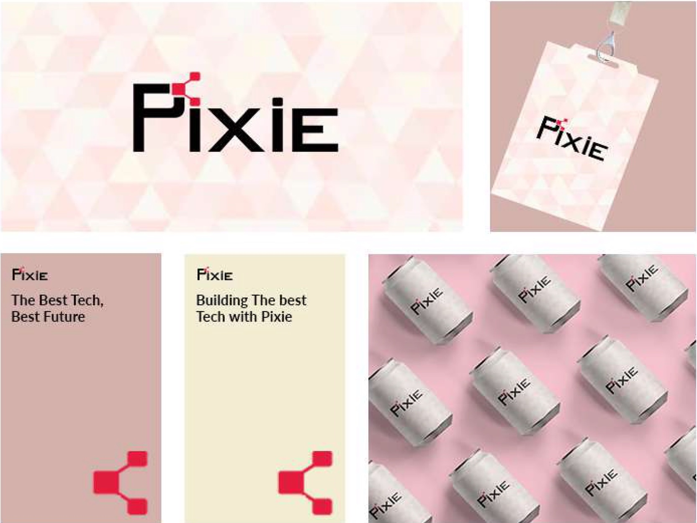

Brand identity
Pixie
A minimal technology identity with a warm, approachable personality.

01 / PURPOSE & CONCEPT
Smart technology. Human warmth.
A modern, minimal identity for Pixie, a technology company focused on innovation and connectivity. The logo’s stylised “X” symbolises digital networks and smart technology.
02 / DESIGN APPROACH
The visual language.
Soft geometric backgrounds contrast with bold typography. A pink-and-cream palette adds warmth, while technology-inspired icons carry the visual language across print, packaging, and digital assets.
03 / RESULT
A consistent brand presence.
A distinctive identity that balances technical sophistication with visual warmth, positioning Pixie as an innovative, user-friendly brand in the digital space.
04 / WHY THIS DIRECTION
Give technology a warmer expression.
The network-inspired detail in the wordmark connects Pixie to digital systems, while pink and cream soften the presentation. Strong black typography keeps the name prominent against the gentle geometric backgrounds. This balance makes the identity feel technical without relying on a cold or heavily industrial visual style.
05 / CRITICAL REASONING
Warmth still needs contrast.
A soft palette can become visually weak if every element has the same emphasis. Black lettering creates a strong anchor, and the brighter network accent supplies a focal point. Background patterns should stay subtle so they do not interfere with the wordmark. The small network detail also needs checking at reduced sizes, where its connections may become less clear.
06 / ACROSS APPLICATIONS
A flexible graphic vocabulary.
The wordmark, network motif, and geometric pattern connect packaging, printed graphics, and digital assets. Different compositions can vary the balance of pink and cream while retaining the same recognisable elements. The identity stays coherent without repeating a single layout everywhere.